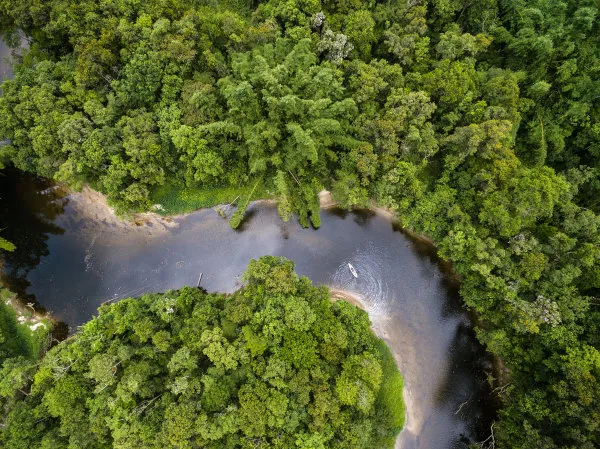

O Acre é um estado localizado na região Norte do Brasil, composto por 22 municípios e com uma população estimada de 880.631 habitantes em 2024, conforme dados do IBGE. Sua capital é Rio Branco, que concentra a maior parte da população estadual. O estado é conhecido por sua rica biodiversidade e por ser um importante polo de preservação ambiental, com vastas áreas de floresta amazônica. A economia acreana é baseada na agropecuária, extrativismo vegetal e turismo ecológico. O atual governador do Acre é Gladson Cameli.
